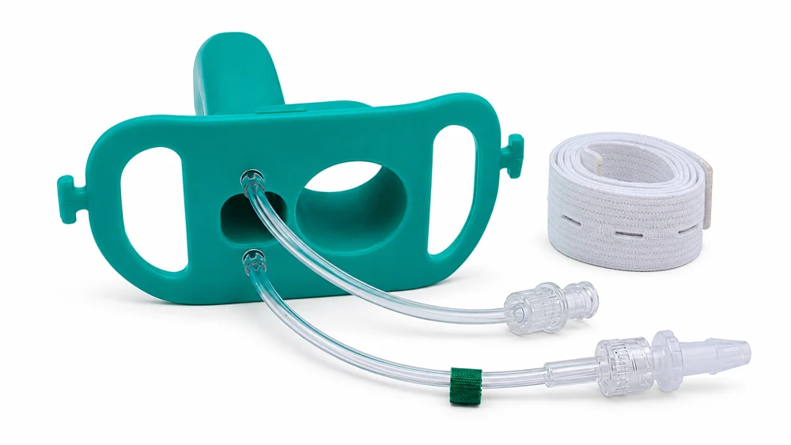

Duplo lúmen
Um orifício redondo para sondas de endoscopia digestiva e um orifício quadrado para broncofibroscopia flexível.
Duas vias.Um único dispositivo.
Mantém a via aérea pérvia, entrega oxigênio, monitora o CO₂ e abre passagem exclusiva para o endoscópio, tudo em uma única peça anatômica.

O dispositivo
Onde a cânula convencional oferece um único canal, a separa a via aérea da passagem de instrumentos e integra oxigênio e capnografia ao próprio dispositivo.
Um orifício redondo para sondas de endoscopia digestiva e um orifício quadrado para broncofibroscopia flexível.
Extensão dedicada para oferta de O₂ durante todo o procedimento, sem improvisos.
Segunda extensão conectada ao capnógrafo para monitorar o CO₂ expirado em tempo real.
Bloco de mordedura que protege a fibra óptica, formato anatômico com bordas arredondadas e faixa elástica de fixação.
Comparação de características estruturais conforme descrito na patente BR102019003396B1
Indicado para adultos sob sedação profunda com ventilação espontânea, em ambiente hospitalar e por profissional habilitado. Consulte as instruções de uso completas.
Evidência científica
A tecnologia da foi apresentada à comunidade científica internacional e publicada em revistas de referência.
A novel oropharyngeal double lumen cannula for transesophageal echocardiography sedation: a case series
New oropharyngeal double lumen cannula for sedation for transesophageal echocardiography: case series · 2020 · 70(2):134–139
Estudos de série de casos com 30 pacientes adultos, conduzidos com a primeira geração do dispositivo. O resumo do JCVA integra os anais do congresso EACTA 2019. Consulte as publicações para métodos e resultados completos.
Especificações
Selecione o tamanho de interesse e inclua na sua solicitação.
Solicitar cotaçãoDocumentos
Documentação oficial do produto, disponível para consulta e download.
Manual do fabricante com indicações, modo de uso, armazenamento e esterilização.
Abrir PDF 439 KBPublicação oficial da notificação no Diário Oficial da União, em 26/02/2024.
Abrir PDF 197 KBPatente brasileira BR 102019003396-7 B1, concedida pelo INPI em 27/08/2024.
Abrir PDF 3,2 MBDocumentos em português. Para outras versões e informações técnicas, fale com nossa equipe.
Contato comercial
Conte-nos sobre sua necessidade. Nossa equipe responde com condições, disponibilidade e prazos.
Dúvidas
É uma cânula orofaríngea de duplo lúmen, de uso único e fornecida estéril. Mantém a via aérea pérvia durante a sedação e permite passar a sonda endoscópica, oferecer oxigênio e monitorar CO₂ com um único dispositivo.
Endoscopia digestiva alta, broncofibroscopia flexível, ecocardiografia transesofágica, procedimentos terapêuticos gastroduodenais como CPRE e sedação com ventilação não invasiva sem intubação. Também pode servir de guia em emergências para tubos orotraqueais.
Para pacientes adultos sob sedação, com ventilação espontânea, em ambiente hospitalar e por profissional médico capacitado. Siga sempre as instruções de uso.
Use o formulário de contato. Nossa equipe retorna com condições comerciais, disponibilidade e prazos de fornecimento, inclusive para distribuidores.